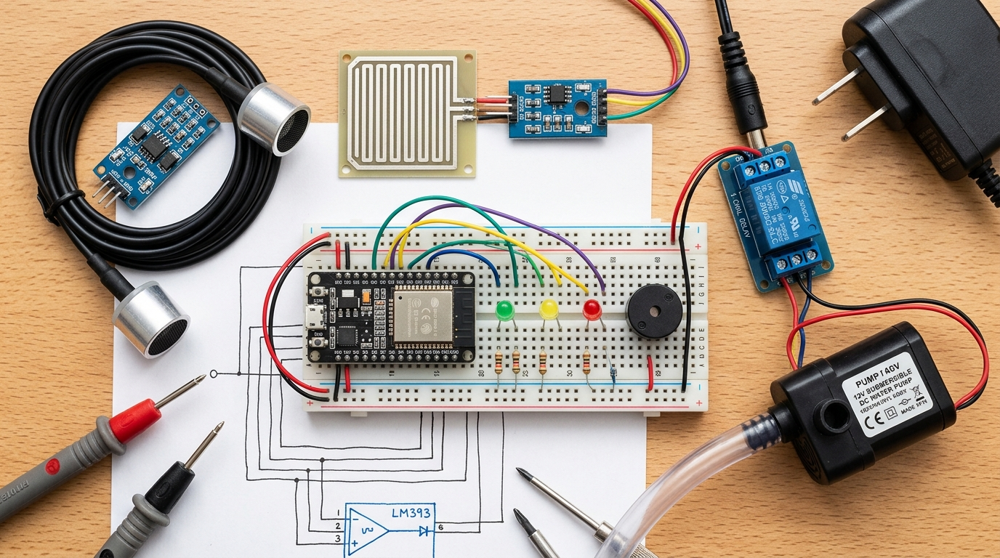

💡 Real Instruments View: Click any component on the workbench (Rain plate, ultrasonic probe, relay, or pump) to test and interact live!
HC-SR04 (26cm)
Sensor Dist: 21.0 cm
🔴 CRITICAL FLOOD (20.0 cm / 85.1%)
🟡 WARNING LEVEL (15.0 cm Dual-Confirmed)
💧 WATER SENSOR PROBE @ 15.0 cm (GPIO 35)
🟢 SAFE CHANNEL BED (0 cm)
5.0 cm
(25.0%)
12V PUMP
Water Reservoir
| No. | Component | Module Pin | ESP32 Pin / Power | Additional Components | Purpose |
|---|---|---|---|---|---|
| 1 | Raindrop Sensor | AO | GPIO 34 | - | Analog rain intensity (0-4095) |
| 2 | DO (optional) | GPIO 25 | - | Digital rain detection (active LOW) | |
| 3 | VCC | 3.3 V | - | Sensor power (3.3V) | |
| 4 | GND | GND | - | Common ground | |
| 5 | Water Sensor | Signal / S | GPIO 35 | - | Analog water contact/depth (0-4095) |
| 6 | VCC | 3.3 V* | - | Sensor power (*safe for 3.3V GPIO) | |
| 7 | GND | GND | - | Common ground | |
| 8 | Ultrasonic Sensor | TRIG | GPIO 5 | - | Ultrasonic trigger pulse |
| 9 | ECHO | GPIO 18 | 1kΩ + 2kΩ voltage divider | Echo pulse (5V to 3.3V safe) | |
| 10 | VCC | 5V (VIN) | - | Sensor power | |
| 11 | GND | GND | - | Common ground | |
| 12 | Buzzer Module | Signal / IN | GPIO 26 | - | Acoustic siren warning alarm |
| 13 | VCC | 3.3V / 5V | - | Module power | |
| 14 | GND | GND | - | Common ground | |
| 15 | Green LED | Anode (+) | GPIO 19 | 220–330 Ω resistor | Low risk indicator (Safe / Normal) |
| 16 | Yellow LED | Anode (+) | GPIO 21 | 220–330 Ω resistor | Medium risk indicator (Watch / Warning) |
| 17 | Red LED | Anode (+) | GPIO 22 | 220–330 Ω resistor | High risk indicator (Critical Alert) |
| 18 | All Three LEDs | Cathode (−) | GND | Through resistors | Common ground return |
| 19 | Relay Module | IN | GPIO 23 | - | Pump control signal (active LOW) |
| 20 | VCC | 5V (VIN) | - | Relay coil power | |
| 21 | GND | ESP32 GND | - | Common ground | |
| 22 | Relay & Water Pump Wiring | COM | Power Supply (+) | - | Positive supply for pump (e.g. 12V +) |
| 23 | NO | Pump (+) | - | Pump positive terminal | |
| 24 | Pump (-) | Power Supply (-) | - | Negative terminal of rated power supply | |
| 25 | NC | Unconnected | - | Leave unconnected |
🔬 Live Sensor Diagnostics (Raw ADC & Timings)
ESP32: 115200 BAUD • 1.0s
Ultrasonic Echo Timing
--
μs
→ Air Dist: -- cm
TRIG: GPIO 5 • ECHO: GPIO 18
Raindrop Plate ADC & DO
--
/ 4095
Volt: -- V • DO: --
AO: GPIO 34 • DO: GPIO 25
Water Sensor (S) Immersion
--
/ 4095
Volt: -- V • State: --
Signal S: GPIO 35 (ADC1)
Relay & Actuators Pin Registers
--
(Pump: --)
LEDs: G:-- Y:-- R:-- • Buz:--
Relay: 23 • Buzzer: 26 • LEDs: 19,21,22
ESP32 Serial Monitor @ 115200 Baud
[SYSTEM] ESP32 DevKit V1 Initialized...
[SYSTEM] HC-SR04 Ultrasonic Sensor on GPIO 5 (TRIG) & GPIO 18 (ECHO). Bucket: 26cm, Max: 23.5cm.
[SYSTEM] Rain Drop Sensor connected to GPIO 34 (AO) & GPIO 25 (DO).
[SYSTEM] Contact Water Sensor mounted at 15cm on GPIO 35 (Dual-Confirmation Warning).
[SYSTEM] 12V Submersible Pump Relay configured on GPIO 23.
[SYSTEM] Web Serial API ready. Click "⚡ Connect Real ESP32" to stream live hardware.
Live Sensor Telemetry
River Water Depth
5.0
cm
HC-SR04 Air Distance
21.0
cm
Target to Transducer (26cm Mount)
Water Sensor (GPIO 35 @ 15cm)
DRY (SAFE)
Raw: 0 | Volt: 0.00V
Rain Drop Status (GPIO 34/25)
NO RAIN
AO: 4095 | DO: HIGH
Rate of Rise (ΔH/Δt)
+0.00
cm/min
Stable ➡️
⏱️ Early Warning Runoff Prediction
LOW RISK
Channel Safe
No impending overflow risk detected at current rate.
Dual-Confirmation Decision Matrix (Hardware Evaluator)
SAFE / NORMAL
🟡 WARNING LEVEL (15.0 cm)
SAFE (0/2)
1. Water Depth ≥ 15.0 cm
5.0 cm (NO)
2. Water Sensor @ 15cm WET
DRY (NO)
🔴 CRITICAL FLOOD (20.0 cm)
SAFE
1. Water Depth ≥ 20.0 cm
5.0 cm (NO)
Water Level & Pump Telemetry (Real-Time)